| Date | Symbol | TF | Pattern | Dir | Verdict | Claude Pattern | Claude Dir | Conf | Rec |
|---|---|---|---|---|---|---|---|---|---|
| crypto 10 patterns | |||||||||
| 2026-09-26 | DOGE-USD | 1d | Descending | LONG | Disputed | ? | ? | Certainty: 82 | — |
Chart 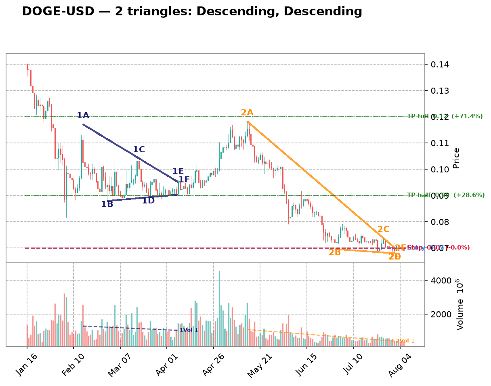 Claude Notes The right side of the chart (roughly Jun 15 – Aug 04) shows a clear, consistent downtrend with lower highs and lower lows, flattening only slightly near the very end around 0.07. There is no rising support line - price has been making consistently lower lows since June, and the recent flattening near 0.07 is only 3-4 candles wide with minimal touches, not a well-defined horizontal support. This looks like a continued downtrend into a possible basing/consolidation zone rather than a descending triangle with a validated flat support line and converging lower-high resistance. I don't see the two converging trendlines required (a flat bottom plus a clearly descending top with multiple touches) - the recent price action is mostly sideways/choppy with small range, not a clean apex compression. I disagree with the algorithm's descending triangle (long) call because the setup lacks clear repeated touches on a flat support line and the overall trend context is bearish, not a basing pattern. Presence certainty 82/100 — how sure Claude is that its found/not-found call is correct | |||||||||
| 2026-09-26 | ETH-USD | 1d | Symmetric | SYMMETRIC | Disputed | ? | ? | Certainty: 78 | — |
Chart 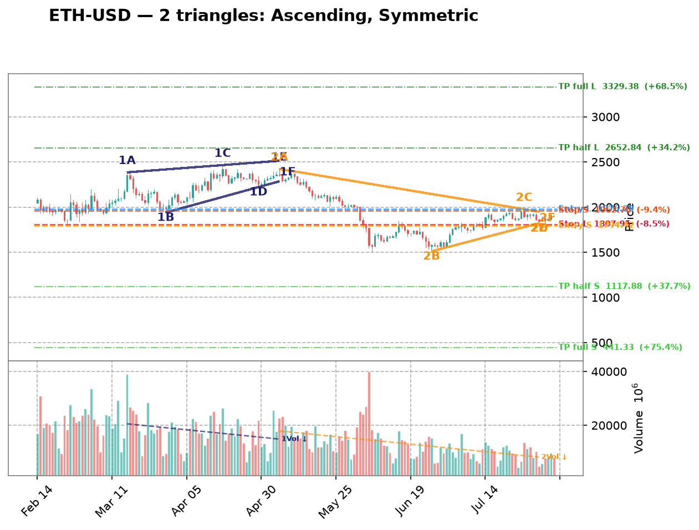 Claude Notes The right side of the chart (mid-Jun to Jul) shows a recovery from ~1580 low to a range roughly 1800-1950, followed by consolidation with fairly flat highs (~1950) and flat lows (~1830-1850). This looks more like a tight horizontal/rectangular consolidation than a converging triangle - the upper and lower boundaries are both roughly flat rather than sloping toward each other. There's no clear diagonal convergence (descending highs meeting rising lows); instead price has been trading sideways in a narrow band for the last few weeks after the sharp bounce off lows. This resembles a flag/range rather than a symmetric triangle apex formation. Presence certainty 78/100 — how sure Claude is that its found/not-found call is correct | |||||||||
| 2026-09-26 | VET-USD | 1d | Descending | LONG | Disputed | ? | ? | Certainty: 75 | — |
Chart 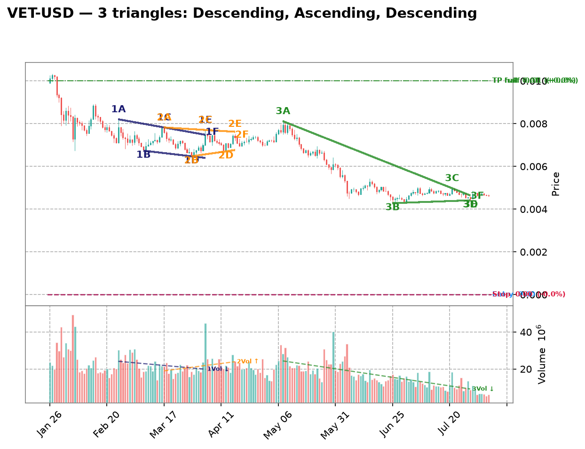 Claude Notes From late June through late July, VET has been trading in a tight, roughly flat sideways range between ~0.0045 and ~0.0050 with no clear convergence — highs and lows are both roughly flat, not narrowing. This looks more like a flat consolidation/rectangle than a descending triangle, since a descending triangle requires a clearly falling upper trendline (lower highs) with a flat support. Here the upper boundary is not making distinct lower highs; both boundaries appear flat. There's no visible apex forming near the right edge. I disagree with the algorithm's descending triangle call — the recent price action looks like range-bound consolidation after the prior steep downtrend from May, not an active converging triangle. Presence certainty 75/100 — how sure Claude is that its found/not-found call is correct | |||||||||
| 2026-09-26 | XRP-USD | 1d | Descending | LONG | Disputed | ? | ? | Certainty: 75 | — |
Chart 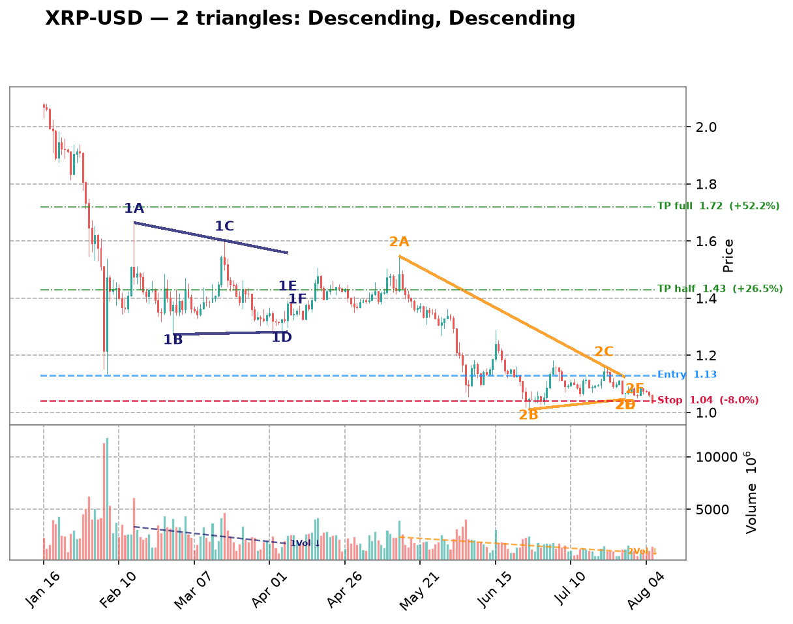 Claude Notes Since mid-May the price has been in a clear downtrend, dropping from ~1.5 to ~1.05, followed by a sideways consolidation from late June through August in a fairly narrow range (~1.0-1.2) without a clear converging structure. There's no obvious flat support with a descending resistance line converging toward it - the recent price action looks more like a rectangular consolidation/basing pattern than a descending triangle. Highs and lows in the last two months are roughly flat/choppy rather than showing a clean lower-highs trendline. I don't see 2+ credible touches forming a well-defined descending upper trendline converging with a flat support line, so I disagree with the algorithm's descending triangle call. Presence certainty 75/100 — how sure Claude is that its found/not-found call is correct | |||||||||
| 2026-09-26 | SOL-USD | 1d | Symmetric | SYMMETRIC | Not reviewed | ? | ? | — | — |
Chart 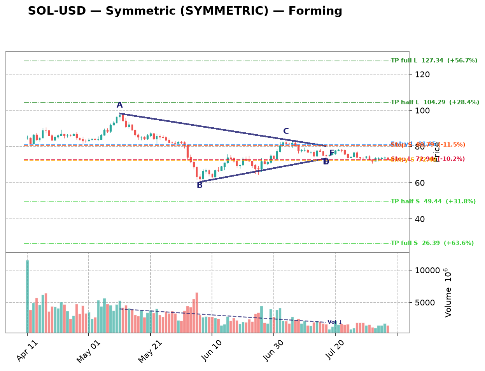 Claude Notes {
"found_triangle": true,
"pattern_type": "Symmetric",
"direction": "SYMMETRIC",
"presence_confidence": 55,
"pattern_quality": 45,
"notes": "From late June to late July, price shows a mild compression: highs decline from ~83 (Jun 30) to ~78-79 (mid-Jul), while lows rise slightly from ~72 to ~73-74. The range is narrowing (roughly 73-83 down to 72-76), suggesting a loose symmetric convergence. However, the touches are somewhat noisy with only 2-3 clear points per side, and the last several candles are flattening into a tight sideways range rather than a sharp apex. This is a plausible but weak/late-stage triangle rather than a textbook pattern; price could already be near breakout given the tight recent compression at the right edge.",
} | |||||||||
| 2026-09-26 | MANA-USD | 4h | Ascending | SHORT | Disputed | ? | ? | Certainty: 80 | — |
Chart 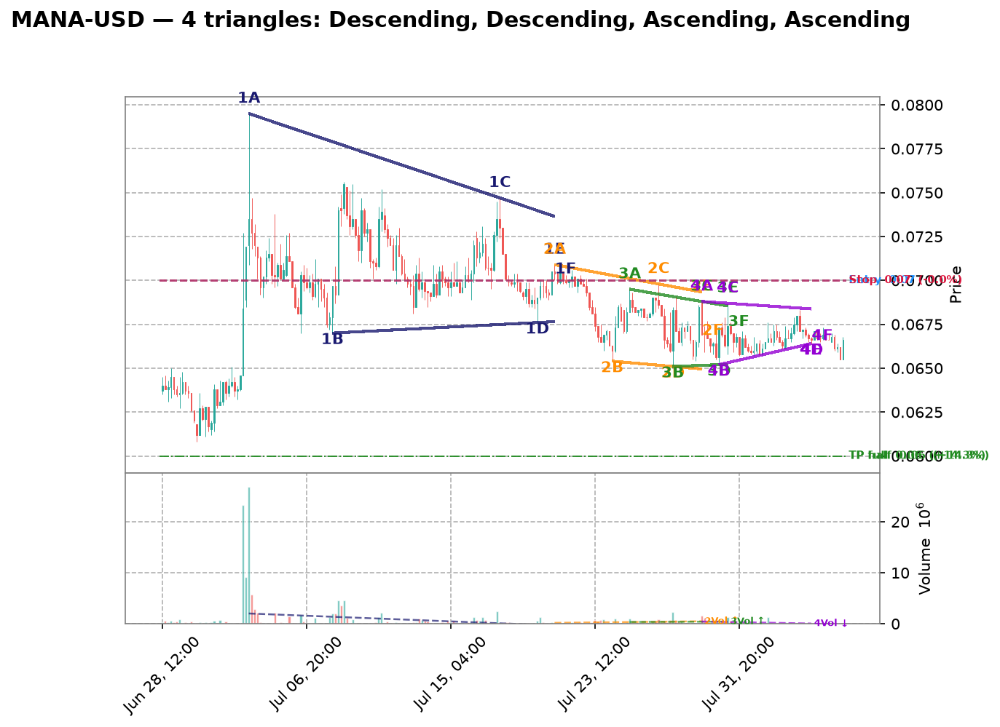 Claude Notes The right side of the chart (late July into early August) shows price oscillating in a tight, flat range around 0.066-0.068 with no clear rising lower trendline or converging structure - it's essentially a flat consolidation/range, not a triangle. There's no series of higher lows to support an ascending triangle; lows are roughly flat (~0.0655-0.066) and highs are also roughly flat (~0.068-0.069), making this look more like a rectangle/range-bound consolidation after a downtrend rather than a converging triangle. The algorithm's ascending triangle call doesn't hold up since the lower boundary isn't clearly rising - it's flat to slightly choppy. Disagreeing with the algorithm's flag. Presence certainty 80/100 — how sure Claude is that its found/not-found call is correct | |||||||||
| 2026-09-26 | SAND-USD | 4h | Descending | LONG | Disputed | ? | ? | Certainty: 78 | — |
Chart Claude Notes The chart shows a persistent downtrend from early July (~0.0510) through late July (~0.0410), followed by a period of choppy, range-bound consolidation between roughly 0.0410-0.0440 from Aug 1 onward. There is no clear flat support line with a descending resistance line converging toward it - the recent price action looks more like a horizontal consolidation/rectangle with roughly equal highs and lows rather than a descending triangle. Highs since the volume spike (~Jul 29) are not making consistently lower highs; they oscillate near 0.0435-0.0440 multiple times, and lows also oscillate near 0.0410-0.0420 without a clear rising trendline either. This looks more like sideways consolidation after a downtrend rather than a converging triangle. I disagree with the algorithm's descending triangle call since neither trendline shows a clean, consistent slope with multiple respected touches converging toward an apex. Presence certainty 78/100 — how sure Claude is that its found/not-found call is correct | |||||||||
| 2026-09-26 | XLM-USD | 3h | Descending | LONG | Disputed | ? | ? | Certainty: 88 | — |
Chart Claude Notes The chart shows a clear downtrend with a series of lower highs and lower lows from early July through early August, not a converging triangle. There is no flat or rising support line - price has been making progressively lower lows (0.18 -> 0.175 -> 0.17 -> 0.165 -> 0.16), and the highs are also declining. This is a descending staircase pattern / downtrend, not compression into an apex. The algorithm's 'Ascending triangle' flag appears incorrect - there's no evidence of rising support meeting flat resistance; instead both boundaries are falling, which would more resemble a channel or just a downtrend rather than a converging triangle. No credible triangle structure is visible near the right edge of the chart. Presence certainty 88/100 — how sure Claude is that its found/not-found call is correct | |||||||||
| 2026-09-26 | ETC-USD | 3h | Descending | LONG | Disputed | ? | ? | Certainty: 80 | — |
Chart 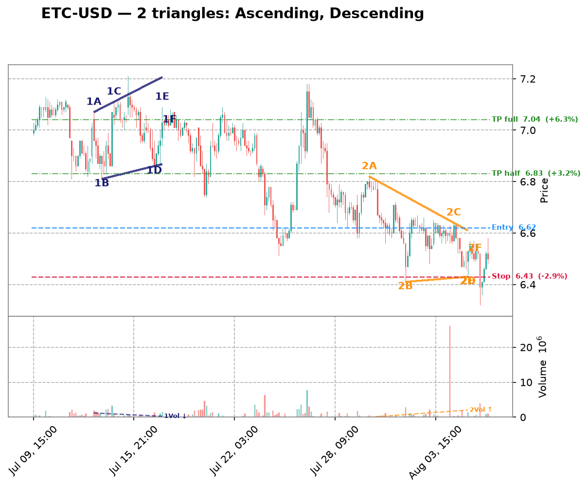 Claude Notes The right side of the chart shows a clear, consistent downtrend with lower highs and lower lows in a fairly steady descending channel, not a compressing triangle. There's no flat support line - lows keep dropping (6.6 -> 6.5 -> 6.4 -> 6.35), and highs are also declining in roughly the same slope, suggesting a parallel down-channel rather than converging trendlines. No evidence of a flattening support base required for a descending triangle. I disagree with the algorithm's flag; this looks like a continued downtrend rather than a triangle consolidation. Presence certainty 80/100 — how sure Claude is that its found/not-found call is correct | |||||||||
| 2026-09-26 | VET-USD | 3h | Ascending | SHORT | Disputed | ? | ? | Certainty: 78 | — |
Chart Claude Notes The right side of the chart (Aug 03 - Aug 06) shows a downtrend into a tight consolidation, not a clean ascending triangle. Highs are declining (0.0048 -> 0.0047 -> 0.0046), and lows are flat/oscillating around 0.0046 rather than rising in a stepped pattern. There's no clear rising support line with distinct higher lows; price is mostly moving sideways with low volatility after a drop from the Aug 3 peak. This looks more like a flag/consolidation or a mild descending drift than an ascending triangle. I disagree with the algorithm's flag - the structure lacks the clear rising trendline needed for an ascending triangle, and the resistance line is falling rather than flat, which would actually argue more for descending or symmetric characteristics, but even those are weak given the choppy, non-converging price action. Presence certainty 78/100 — how sure Claude is that its found/not-found call is correct | |||||||||
| crypto-equity 5 patterns | |||||||||
| 2026-09-26 | MSTR | 3h | Descending | LONG | Disputed | ? | ? | Certainty: 68 | — |
Chart 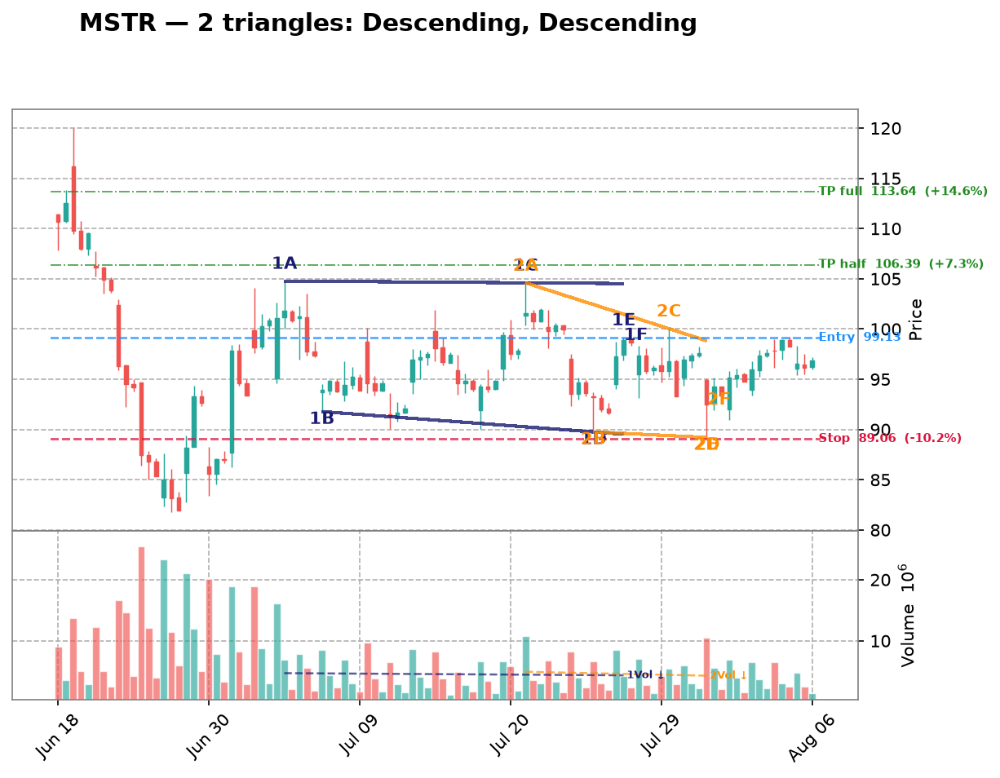 Claude Notes The right side of the chart (mid-July through early August) shows price oscillating in a fairly flat, choppy range roughly between 92-100 with no clear convergence. Highs are not consistently declining (e.g., late July peaks near 100-102 are similar to early August peaks near 99), and lows are not rising in a clean stepwise fashion - they bounce between 90-96 without a clear ascending support line. This looks more like a horizontal consolidation/range-bound chop than a descending triangle. There's no visible apex forming or clear compression - the trading range width in early August is similar to mid-July. I don't see the 'flat support, declining resistance' structure required for a descending triangle; instead both boundaries look roughly flat/sideways, which would argue for a rectangle/range rather than a triangle. Presence certainty 68/100 — how sure Claude is that its found/not-found call is correct | |||||||||
| 2026-08-09 | MSTR | 1h | Ascending | SHORT | Disputed | ? | ? | Certainty: 78 | — |
Chart  Claude Notes The right-side price action (late Aug 5 into Aug 6) shows a decline from ~99 to ~96.5 with lower highs and lower lows together — this looks like a mild downtrend/pullback rather than a converging triangle with a rising support line. There's no clear rising trendline of higher lows; instead both highs and lows are declining in tandem, more consistent with a small descending channel or simple retracement than an ascending triangle. No flat resistance line is visible either (highs are dropping from ~99 to ~97.5 to ~97). I don't see the two clearly converging trendlines required for a valid triangle at the right edge, so I disagree with the algorithm's ascending triangle / short flag. Presence certainty 78/100 — how sure Claude is that its found/not-found call is correct | |||||||||
| 2026-08-09 | CIFR | 1h | Descending | LONG | Disputed | ? | ? | Certainty: 78 | — |
Chart  Claude Notes The chart shows a series of large swing oscillations (roughly 26->18->24->17->26->18->25->18) rather than a converging structure. Each swing has similar amplitude, indicating a broad trading range/downtrend with volatility rather than a narrowing triangle. Near the right edge, price is declining from ~25 to ~18-19 with no flattening support line or clear lower highs converging into an apex - the recent candles show a steady downward slide, not compression. There is no consistent horizontal support with descending highs; the swings are too wide and repetitive to qualify as a descending triangle. I disagree with the algorithm's flag - this looks like continued range-bound/down-trending price action, not a triangle nearing apex. Presence certainty 78/100 — how sure Claude is that its found/not-found call is correct | |||||||||
| 2026-08-09 | MARA | 1h | Descending | LONG | Disputed | ? | ? | Certainty: 78 | — |
Chart  Claude Notes {
"found_triangle": false,
"pattern_type": null,
"direction": null,
"presence_confidence": 78,
"pattern_quality": null,
"notes": "The chart shows an overall downtrend with successive lower highs (15, 14, 13, 12.7, 12) and lower lows (12, 11.8, 10.7, 10, 10.7), forming a descending staircase rather than a converging triangle. There's no flat/horizontal support line - the lows are also declining, not holding at a consistent level. At the right edge, price is consolidating in a tight range around 10.7-12 but without clear evidence of a rising lower boundary or flat lower support meeting a descending upper trendline with 3+ touches each. This looks more like a broader downtrend with intermittent consolidation than a well-defined descending triangle. The algorithm's flag is plausible given the recent narrowing range, but the lower boundary isn't flat - it's still sloping down, making this more consistent with a bearish channel/flag than a classic descending triangle setup for a LONG bias, which would typically need a firm horizontal support.",
} Presence certainty 78/100 — how sure Claude is that its found/not-found call is correct | |||||||||
| 2026-08-09 | IREN | 1h | Symmetric | SYMMETRIC | Disputed | ? | ? | Certainty: 72 | — |
Chart  Claude Notes The chart shows a broad downtrend from late June (~57) into a choppy bottoming/ranging structure from mid-July through early August, oscillating between roughly 30 and 44 with multiple swing highs and lows of similar magnitude - more like a wide horizontal range than a converging wedge. Near the right edge (early August), price is bouncing between ~37-41 without clear narrowing of highs and lows; recent candles show similar range width to prior weeks rather than compression toward an apex. I don't see two clearly converging trendlines with consistent touch points - the swing highs (44, 43, 41) and lows (33, 30, 36) don't form a tight symmetric convergence, they look more like a rounded/ranging base. I disagree with the algorithmic flag; this looks more like consolidation/basing after a downtrend rather than a well-defined symmetric triangle. Presence certainty 72/100 — how sure Claude is that its found/not-found call is correct | |||||||||
| mega-cap 4 patterns | |||||||||
| 2026-09-26 | AMZN | 1d | Descending | LONG | Disputed | ? | ? | Certainty: 85 | — |
Chart 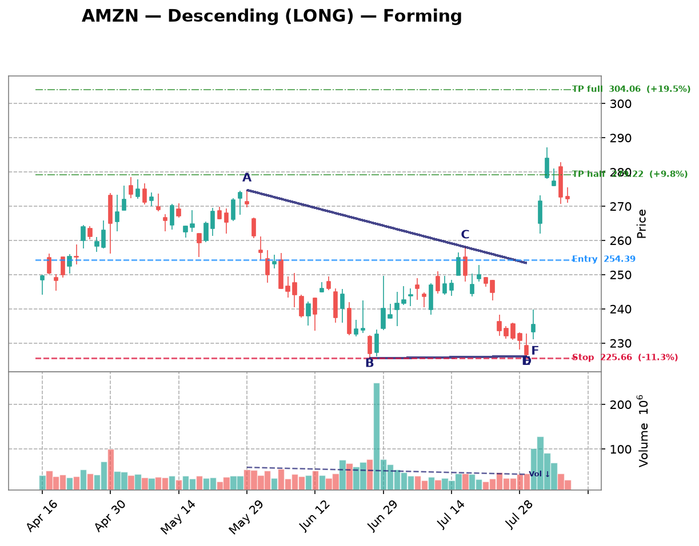 Claude Notes The right edge of the chart shows a sharp rally from ~230 to ~285 followed by a pullback to ~272-280, not a converging triangle. There's no clear flat support with lower highs converging - instead we see a strong impulsive move up after a downtrend/consolidation (Jun-Jul range between 230-255), then a breakout rally in early Aug. The recent candles (last 5-6) show a spike up and modest retracement, which looks more like a post-breakout consolidation or minor pullback than a descending triangle. No clear two-touch flat support line or descending resistance line with multiple touches is visible near the right edge. The algorithm's flag appears to be a false positive, likely picking up on the earlier May-June consolidation range (255-270) which is now far to the left and disconnected from current price action. Presence certainty 85/100 — how sure Claude is that its found/not-found call is correct | |||||||||
| 2026-09-26 | NVDA | 1d | Descending | LONG | Disputed | ? | ? | Certainty: 80 | — |
Chart 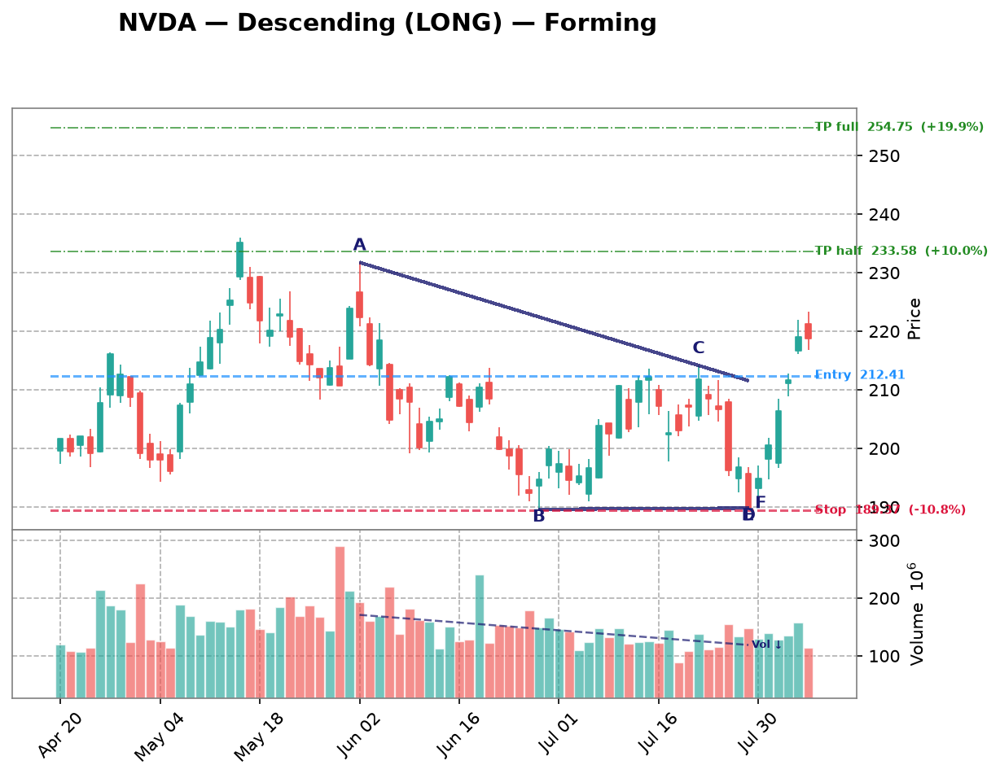 Claude Notes The right side of the chart shows a sharp V-shaped reversal from ~190 (late Jul low) to a strong rally into low 220s, not a converging triangle. There's no flat support base with lower highs converging - instead price made one clear low near Jul 30 and has been rallying steadily since, with increasing candle bodies rather than compression. No clear resistance line being tested repeatedly, and no series of higher lows compressing toward a flat top. This looks like a breakout/reversal move already underway rather than a triangle formation. The algorithm's descending triangle flag doesn't match the visual structure - there's no flat lower support with multiple touches, just a single sharp low followed by an uptrend. Presence certainty 80/100 — how sure Claude is that its found/not-found call is correct | |||||||||
| 2026-09-26 | META | 1d | Descending | LONG | Disputed | ? | ? | Certainty: 70 | — |
Chart 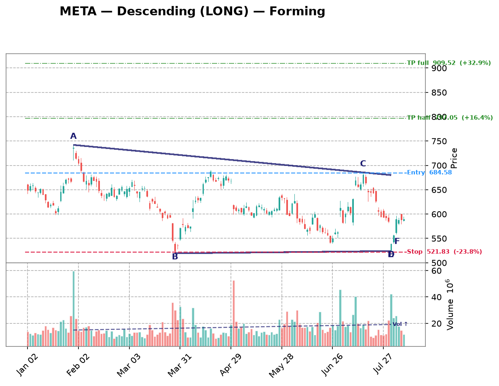 Claude Notes The right side of the chart shows a choppy downtrend with lower highs (670 -> 650 -> 590) but the lows are also declining (600 -> 590 -> 525), not flat or rising. This is more consistent with a descending channel or continued downtrend rather than a descending triangle, which requires a flat/horizontal support line. There's no clear horizontal floor being repeatedly tested - the last candles actually show a sharp drop to ~525 followed by a bounce, breaking any prior support structure. I don't see convincing compression/convergence into an apex; volatility remains wide. I disagree with the algorithm's descending triangle flag due to lack of a flat support line. Presence certainty 70/100 — how sure Claude is that its found/not-found call is correct | |||||||||
| 2026-09-26 | GOOGL | 4h | Ascending | SHORT | Disputed | ? | ? | Certainty: 82 | — |
Chart 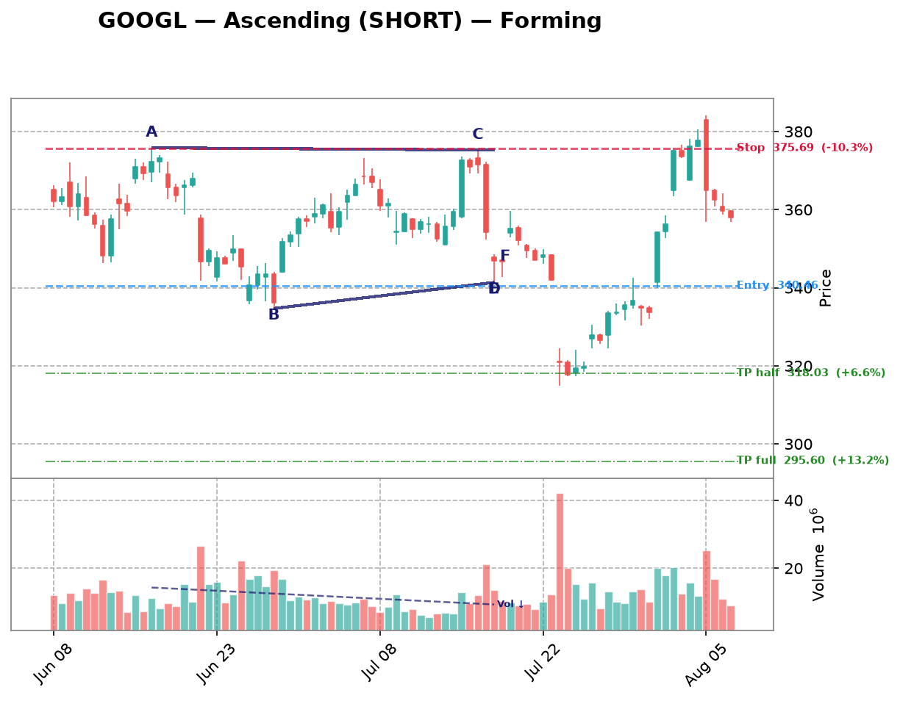 Claude Notes The right side of the chart shows a strong uptrend from ~320 to a peak near 382, followed by a sharp pullback to ~357-365. This is not a triangle - there's no clear horizontal resistance being tested multiple times, nor a well-defined rising support line with multiple touches. The price action shows a strong impulsive rally followed by a single sharp reversal candle, which looks more like a blow-off top or exhaustion move rather than a converging consolidation pattern. There's no compression or narrowing range visible - instead we see expanding volatility (large range candles) near the recent peak. The algorithm's 'ascending triangle' label doesn't fit since there's no flat resistance ceiling being repeatedly tested; the highs were making new highs right up until the reversal, not stalling at a consistent level. Presence certainty 82/100 — how sure Claude is that its found/not-found call is correct | |||||||||
| semiconductors 3 patterns | |||||||||
| 2026-09-26 | ADI | 4h | Descending | LONG | Disputed | ? | ? | Certainty: 70 | — |
Chart 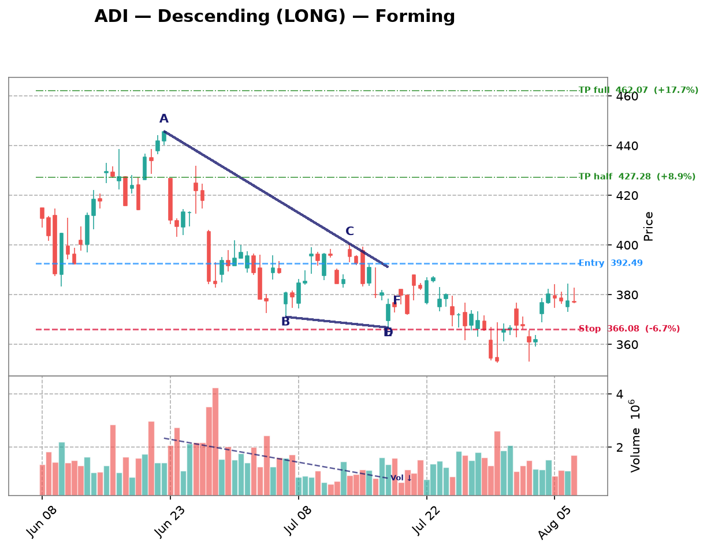 Claude Notes The chart shows a strong downtrend from late June through early August, followed by a small basing/consolidation at the bottom near 355-385 in the last ~10 candles. There isn't a clear flat support with descending resistance converging into an apex - rather, price plunged into a low (~353) and has recently ticked up with fairly flat/sideways action (375-385 range) over the last few candles. This looks more like a potential reversal/basing pattern or just noise near a low than a well-defined descending triangle with multiple clean touches on both a flat bottom and a lower-high resistance line. Only 2 ambiguous touches on each side at most, and the 'triangle' would be extremely compressed in time. I don't see convincing evidence of a sustained descending triangle structure with proper apex convergence. Presence certainty 70/100 — how sure Claude is that its found/not-found call is correct | |||||||||
| 2026-08-09 | LRCX | 1h | Ascending | SHORT | Disputed | ? | ? | Certainty: 72 | — |
Chart  Claude Notes The right-side price action (early Aug) shows a choppy range between roughly 305-320, but there's no clear ascending support line—lows are flat/noisy (around 305-308) rather than making distinct higher lows, and the highs are also roughly flat (~315-320) rather than converging. This looks more like a horizontal consolidation/rectangle than a true ascending triangle. The algorithm likely flagged minor higher-low bumps, but there aren't 2-3 clean touch points forming a rising trendline distinct from a flat one. Prior to this, price action from mid-July was a clear downtrend with lower highs/lower lows, not a triangle. Given the ambiguity of the recent consolidation, I lean toward rejecting the triangle call, though a loose case for a shallow ascending structure isn't impossible. Presence certainty 72/100 — how sure Claude is that its found/not-found call is correct | |||||||||
| 2026-08-09 | AMAT | 1h | Symmetric | SYMMETRIC | Disputed | ? | ? | Certainty: 72 | — |
Chart  Claude Notes The right side of the chart shows a rally from ~500 to ~555 followed by a pullback to ~530, but this looks like a rounded top / pullback within a broader swing rather than a converging triangle. There's no clear sequence of lower highs meeting higher lows - the recent candles (Aug 03-08) show a peak around 555 then a fairly sharp drop to 530, which is more consistent with a short-term downtrend or consolidation than a symmetric wedge. I don't see at least two clean, roughly parallel converging trendlines with multiple touches on each side near the apex. The algorithm may be reacting to the general narrowing of range after the spike, but the touch points are too few and inconsistent to confirm a genuine symmetric triangle. Presence certainty 72/100 — how sure Claude is that its found/not-found call is correct | |||||||||
| forex 2 patterns | |||||||||
| 2026-08-09 | EURUSD=X | 1h | Ascending | SHORT | Disputed | ? | ? | Certainty: 82 | — |
Chart  Claude Notes The right side of the chart shows a clear downtrend from the Aug 5 peak (~1.156) into Aug 6, with lower highs and lower lows in a fairly consistent decline, followed by a flattening/consolidation near 1.1525-1.153. There's no clear rising support line with higher lows to form an ascending triangle - instead price dropped sharply and is now consolidating in a narrow range without a defined converging structure. The algorithm's ascending triangle call doesn't fit since there's no series of higher lows visible; the recent price action looks more like a sharp decline stabilizing at a new lower level rather than a triangle compression. Not enough touch points on both an upper and lower trendline to confirm any triangle pattern near the apex on the right edge. Presence certainty 82/100 — how sure Claude is that its found/not-found call is correct | |||||||||
| 2026-08-09 | NZDUSD=X | 1h | Ascending | SHORT | Disputed | ? | ? | Certainty: 78 | — |
Chart  Claude Notes The right side of the chart shows price consolidating in a choppy range between ~0.5865 and ~0.590 after a strong impulsive rally from late July. However, this looks more like a flat/rectangular consolidation than an ascending triangle - the highs are roughly flat (~0.590) but the lows are also fairly flat/choppy (~0.5865-0.587), not showing a clear rising sequence of higher lows. There's no clean converging trendline structure - both boundaries appear roughly horizontal rather than one flat and one rising. This resembles sideways consolidation or a minor pullback/flag after the breakout rather than a textbook ascending triangle with rising support. The algorithm's flag seems to be picking up on the tightening range but the specific 'rising lower trendline' criterion for ascending triangle isn't clearly satisfied here. Presence certainty 78/100 — how sure Claude is that its found/not-found call is correct | |||||||||
| hardware 2 patterns | |||||||||
| 2026-09-26 | DELL | 1d | Ascending | SHORT | Disputed | ? | ? | Certainty: 75 | — |
Chart 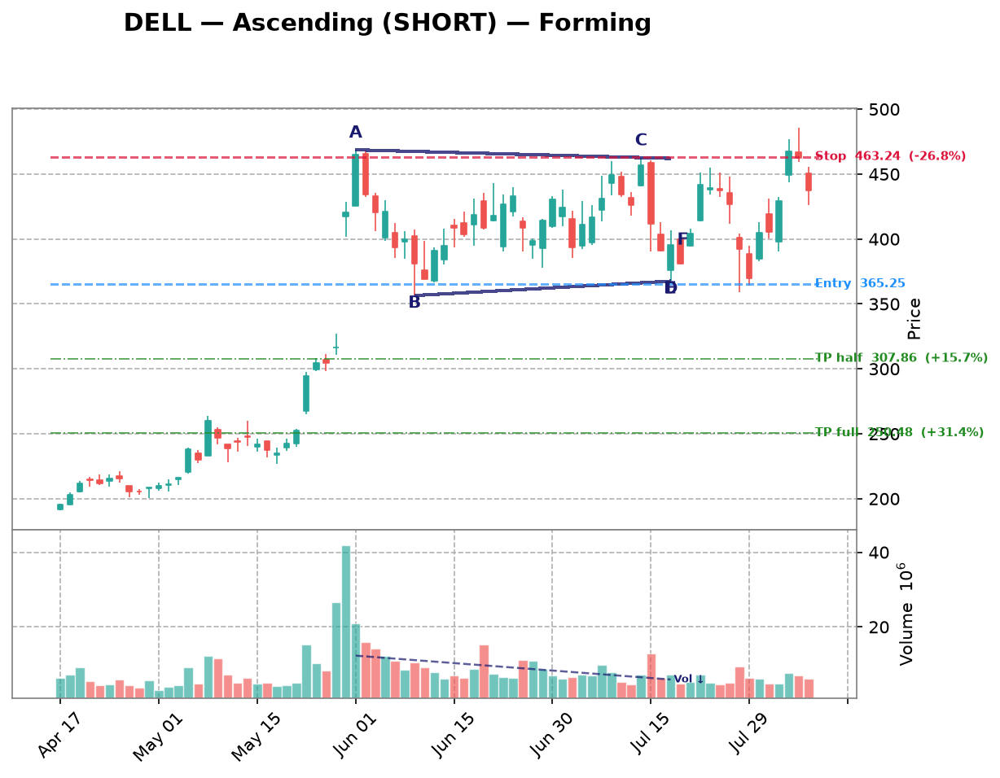 Claude Notes The right side of the chart shows a choppy trading range roughly between 370 and 460 with no clear convergence — highs and lows are oscillating (e.g., peaks near 460, 435, 460, 480 and lows near 370, 385, 360) rather than forming consistent rising lows or a flattening resistance line. This looks more like a wide consolidation/range or a mild uptrend with volatility swings than a converging triangle. No credible ascending triangle structure (flat top + rising bottom) is visible; the recent highs are actually increasing (445→465→480) which doesn't support flat resistance, and lows are inconsistent, not steadily rising. I disagree with the algorithm's ascending triangle call. Presence certainty 75/100 — how sure Claude is that its found/not-found call is correct | |||||||||
| 2026-08-09 | STX | 1h | Descending | LONG | Disputed | ? | ? | Certainty: 72 | — |
Chart  Claude Notes The right-side price action (Aug 03–06) shows a choppy, roughly flat range between ~815 and ~890 with no clear convergence — highs and lows are similarly spaced throughout rather than narrowing toward an apex. There's a sharp downside wick near Aug 06 breaking below the recent range low (~780), which argues against a clean descending triangle setup (support was violated, not respected). I don't see a consistent flat support line with lower highs converging into it; instead it looks like sideways consolidation/noise with one outlier spike down. Not enough clean touch points on both a flat lower line and a descending upper line to call this a credible descending triangle. Presence certainty 72/100 — how sure Claude is that its found/not-found call is correct | |||||||||
| space 2 patterns | |||||||||
| 2026-09-26 | GSAT | 1d | Descending | LONG | Not reviewed | ? | ? | — | — |
Chart 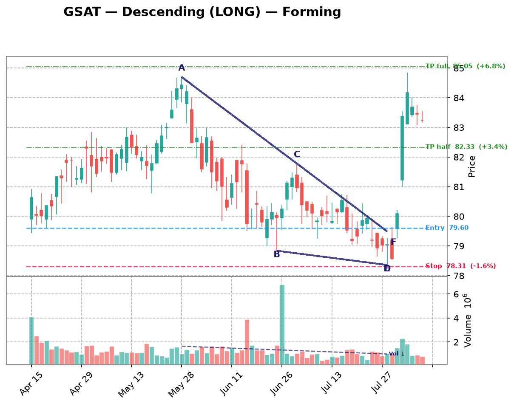 Claude Notes {
"found_triangle": false,
"pattern_type": null,
"direction": null,
"presence_confidence": 82,
"pattern_quality": null,
"notes": "The chart shows a broad decline from late May highs (~84.5) down to a low near 78.7 in late July, followed by a sharp gap-up breakout in early August to ~84-85. There's no clear converging structure - no flat support with descending resistance, and no consistent touch points forming a triangle. The recent price action is a strong impulsive rally away from the prior downtrend, not a contained consolidation. This looks like a completed downtrend followed by a breakout, not a descending triangle in formation. The algorithm likely mistook the general downtrend into late July as a triangle, but there's no flat lower support line - lows kept dropping (81.2, 80, 79.8, 79.6, 78.7) without stabilizing, and highs also declined without a clear well-defined resistance line with multiple touches.",
} | |||||||||
| 2026-09-26 | SPCE | 4h | Descending | LONG | Both detect, differ on type | Ascending | LONG | Quality: 45 | monitor |
Chart 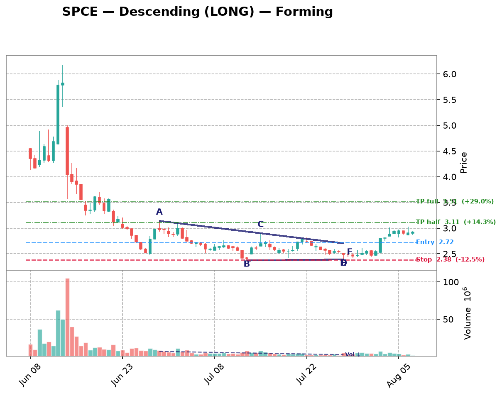 Claude Notes From mid-July onward price has been basing around 2.5 support with a series of higher lows (2.45, 2.5, 2.55, 2.6) while highs remain relatively flat around 2.7-3.0, and recently price broke slightly above that flat resistance near Aug 5. This looks more like a flat-top/ascending triangle than a descending one - the algorithm's descending label doesn't match since the lower boundary is rising, not the upper one falling. The pattern shows compression with 3+ touches on the lower rising trendline and 2-3 touches on the upper flat resistance near 2.9-3.0. Price appears to be breaking out to the upside at the right edge, consistent with an ascending triangle resolution rather than a descending breakdown. Symbol Research Virgin Galactic (SPCE) is a commercial spaceflight company developing suborbital tourism vehicles. It has faced repeated delays, high cash burn, and dilution via equity offerings. Recent context includes suspended commercial flights for vehicle upgrades (Delta class ships), pushing revenue generation further out to 2026, and continued reliance on capital raises, which has kept the stock under long-term pressure with a depressed, low-dollar share price and reverse split history. Market Sentiment bearish Presence certainty 55/100 — how sure Claude is that its found/not-found call is correct Pattern quality 45/100 — how clean/tradable this specific triangle is Research confidence 38/100 — Phase B research conviction Supporting Signals
Opposing Signals
| |||||||||
| adtech 1 pattern | |||||||||
| 2026-09-26 | U | 1d | Ascending | SHORT | Disputed | ? | ? | Certainty: 85 | — |
Chart 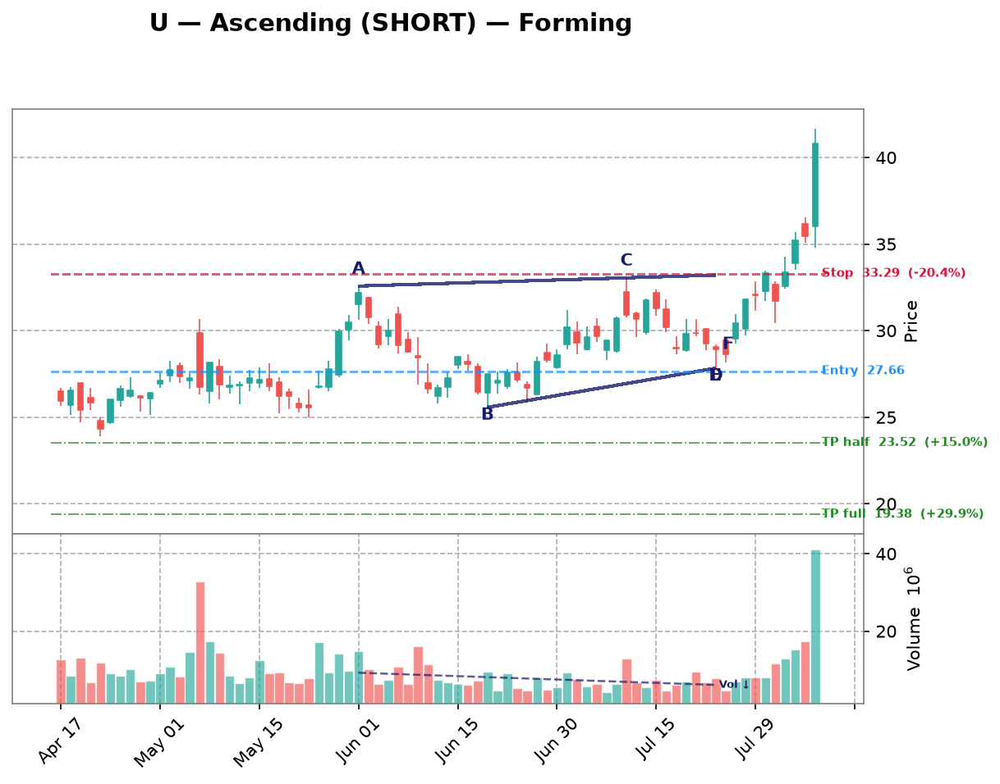 Claude Notes The right side of the chart shows a strong, sustained uptrend with a sharp breakout in the final two candles (price surging from ~32 to ~41), not a compressing triangle. There's no clear flat/descending resistance line being tested multiple times - instead price has already broken out decisively to the upside with a large green candle and volume spike. This looks like a breakout/momentum move rather than a triangle consolidation. The algorithm's 'ascending triangle short' flag doesn't fit here since there's no visible resistance ceiling being repeatedly tested - price simply accelerated upward. No credible triangle structure with 2+ touches on both converging trendlines is present near the right edge. Presence certainty 85/100 — how sure Claude is that its found/not-found call is correct | |||||||||
| commodities 1 pattern | |||||||||
| 2026-09-26 | NEM | 4h | Descending | LONG | Disputed | ? | ? | Certainty: 75 | — |
Chart Claude Notes The chart shows a clear V-shaped structure: a spike up to ~112 around Jun 17, a decline into a trough near 89-90 around Jul 17-20, and then a strong recovery back to ~105 by early August. This is a broad rounding bottom / reversal, not a converging triangle. There's no clear descending upper trendline with lower highs converging into a flat support - instead price made one low around Jul17-20 and has been trending upward with higher lows and higher highs since, which looks more like an emerging uptrend/recovery than a compression pattern. The right edge shows price already broken out to the upside from the prior range, not compressing into an apex. I disagree with the algorithm's descending triangle call - there isn't a well-defined flat support with repeated touches, nor a consistent series of lower highs into the current price action. Presence certainty 75/100 — how sure Claude is that its found/not-found call is correct | |||||||||
| fintech 1 pattern | |||||||||
| 2026-09-26 | SOFI | 1d | Descending | LONG | Disputed | ? | ? | Certainty: 75 | — |
Chart 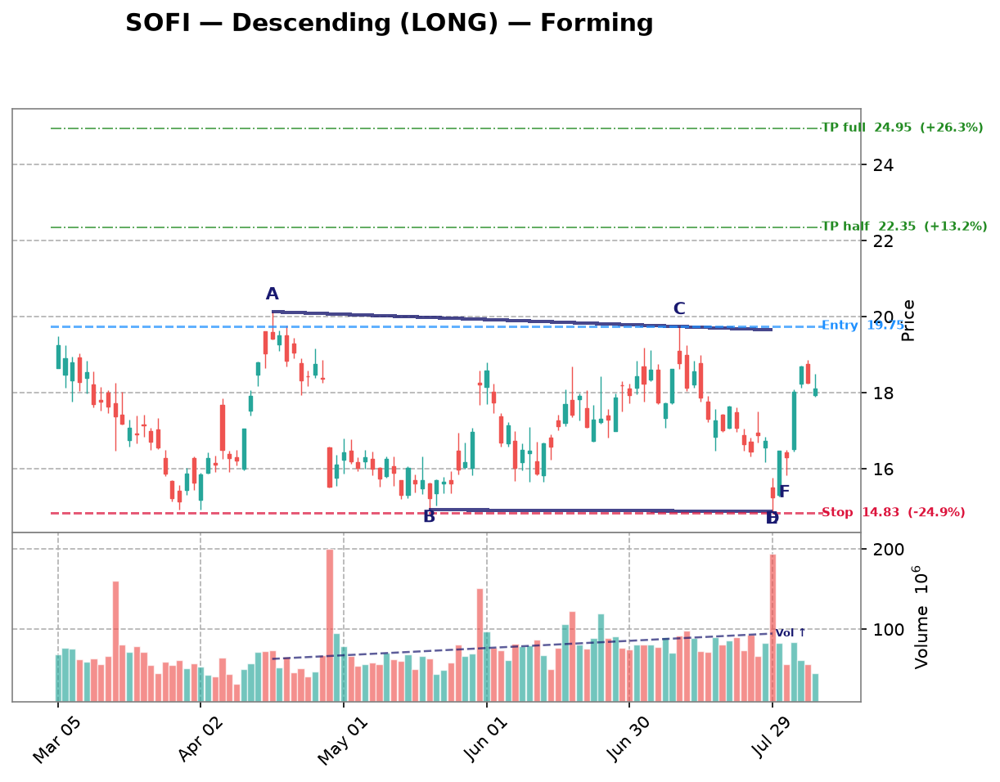 Claude Notes The right side of the chart shows a sharp V-shaped reversal: price dropped hard to ~15 in early August then rallied strongly back to ~18.5-19 over just a few candles. This is a sudden impulsive move, not a compression pattern - there's no series of lower highs meeting a flat support line, nor any narrowing range. The 'descending triangle' call doesn't hold up since there are only 1-2 touch points on any potential resistance line and the recent action is a vertical breakout/reversal rather than gradual convergence. Earlier in the chart (Mar-Apr) there was a downtrend, and mid-chart shows choppy consolidation, but nothing resembling a clean triangle structure with 3+ touches per side is visible near the current price action on the right edge. Presence certainty 75/100 — how sure Claude is that its found/not-found call is correct | |||||||||
| industrials 1 pattern | |||||||||
| 2026-08-09 | RCL | 1h | Ascending | SHORT | Disputed | ? | ? | Certainty: 80 | — |
Chart  Claude Notes The right side of the chart shows price oscillating in a fairly flat range between ~318 and ~330 after a strong impulsive rally from late July. There's no clear rising lower support line - the recent lows (~320-322) are roughly flat or even slightly declining, not making higher lows as required for an ascending triangle. The highs are also roughly flat (~328-330) rather than converging with the lows. This looks more like a consolidation/range or minor pullback after a strong uptrend rather than a converging triangle. I don't see two clear trendlines converging toward an apex - the pattern lacks the compression structure needed. Disagreeing with the algorithm's ascending triangle flag; the structure is closer to a flat consolidation/rectangle than a triangle with rising support. Presence certainty 80/100 — how sure Claude is that its found/not-found call is correct | |||||||||
| internet 1 pattern | |||||||||
| 2026-09-26 | SNAP | 1d | Descending | LONG | Disputed | ? | ? | Certainty: 80 | — |
Chart 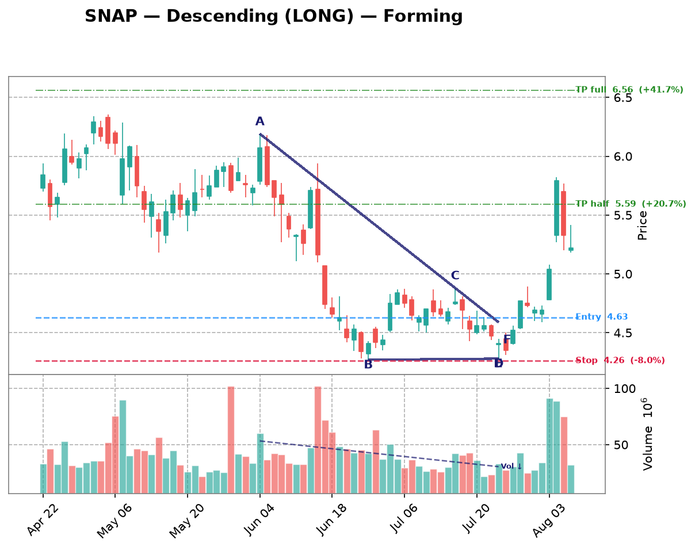 Claude Notes The chart shows a broad downtrend from late April to late June, followed by a choppy basing/consolidation range between roughly 4.3 and 5.0 through July, and then a sharp breakout spike in early August that pushed price up to ~5.8 before pulling back. There is no clear descending resistance line with consistent lower highs converging into a flat support - the July consolidation is more of a flat rectangle/range than a triangle. The recent price action at the right edge is a strong upward impulse candle followed by pullback, which looks like a post-breakout retracement rather than compression into an apex. I don't see two clearly converging trendlines with multiple respected touches, so I disagree with the algorithm's descending triangle flag - this looks more like a base breakout that has already occurred, not an active triangle still forming. Presence certainty 80/100 — how sure Claude is that its found/not-found call is correct | |||||||||